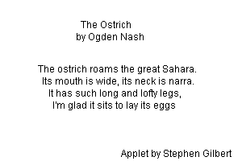

Now that you understand the syntax of a Java Applet, let's see if you can apply it to writing a larger program. Your goal is to write this programs from "scratch", but, if you get stuck, there's some help just a click away.
A Dash of Nash
Try your hand with some graphical output. Use the Web to look up a
short poem by Ogden Nash. Choose a poem with at least four lines,
but no more than 6. Then, create a Java applet named Nash,
using what you've learned this week. Your output should be
similar to this:

The green line around the picture is just to show you where the edges should be. Make your applet 300 pixels wide and 200 pixels high, and center each line, horizontally, inside that area.Leave a "blank" line between the title and the "lines" of the poem. In the bottom right corner, "sign" your applet as I've done here.
You'll have to use "trial and error" to calculate the correct
x,y values for each individual drawString();
there is no "center this line" method. You should, however, want to
add the following line at the beginning of your paint()
method, just to give you a visual reminder of your poem's
boundaries. Only printing within these boundaries will
be saved when you Check your applet.
pen.drawRect(0, 0, 300, 200);
When you run your program, the background of the applet will be gray, not white. You'll learn how to change that in the coming weeks.
Check your lab; the Check program only grades the basic syntax and structure of your applet. I can't really check for correct output.